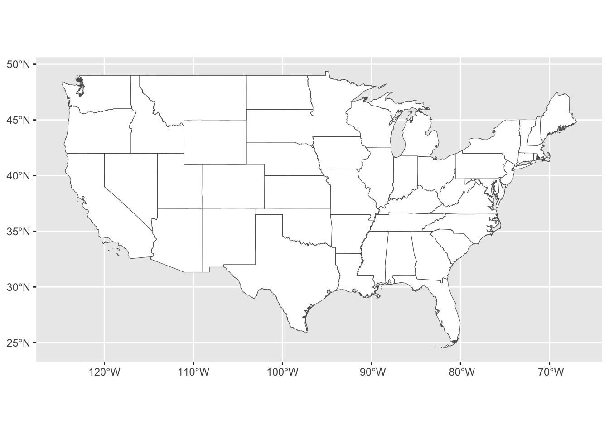
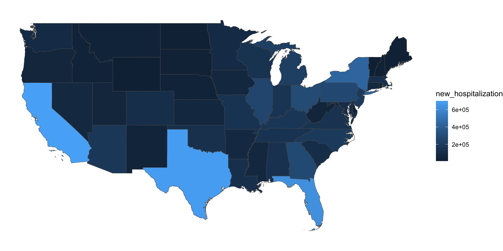
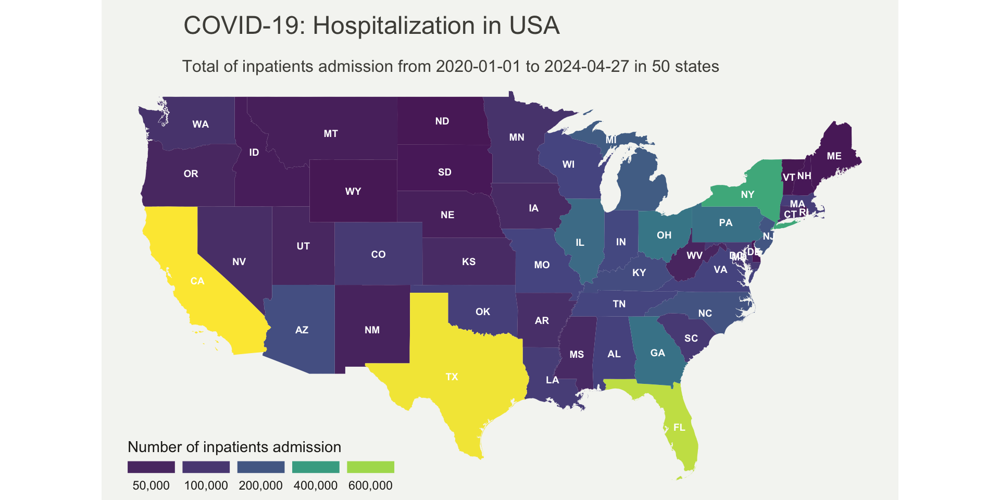

pacman::p_load(rio, # import function
here, # file path
scales, # percent function
janitor, # summary table
sf, # to manager spatial data using a simple feature format
tidyverse # data management and visualization
)Choropleth map with ggplot2 and viridis
R
API
Choropleth map
Viridis
Hospitalization
COVID-19
A briefing of the Choropleth map with ggplot2 and viridis in R
How to build
This post shows the simple way to load geospatial data, merge with different data formats (csv, excel, etc) and build a Choropleth map with ggplot2, viridis in R
About Choroplet map
Choropleth map is composed of colored polygons. It is used to represent spatial variations of a quantity. Making choropleth maps require two main types of inputs 1- Geometry information: - This can either be a supplied GeoJSON file where each feature has either an id field or some identifying value in properties; or - one of the built-in geometries within plot_ly 2- A list of values indexed by feature identifier.
Import shapefile
I will load essential libraries to import data and geospatial analysis.
I downloaded the US states shapefile at census.gov website, it’s for public use. Use read_sf() function to import the shapefile in your local computer; use here() function to say what is the file path.
# Import shapefile
us_states_sf <- read_sf(here("gis", "spf_usa", "usa_shapefile.shp")) %>%
janitor::clean_names() Code
#|code-fold: false
head(us_states_sf, 5)Simple feature collection with 5 features and 9 fields
Geometry type: MULTIPOLYGON
Dimension: XY
Bounding box: xmin: -103.0026 ymin: 30.17394 xmax: -75.24227 ymax: 40.6388
Geodetic CRS: NAD83
# A tibble: 5 × 10
statefp statens affgeoid geoid stusps name lsad aland awater
<chr> <chr> <chr> <chr> <chr> <chr> <chr> <dbl> <dbl>
1 28 01779790 0400000US28 28 MS Mississippi 00 1.22e11 3.93e 9
2 37 01027616 0400000US37 37 NC North Carolina 00 1.26e11 1.35e10
3 40 01102857 0400000US40 40 OK Oklahoma 00 1.78e11 3.37e 9
4 51 01779803 0400000US51 51 VA Virginia 00 1.02e11 8.53e 9
5 54 01779805 0400000US54 54 WV West Virginia 00 6.23e10 4.89e 8
# ℹ 1 more variable: geometry <MULTIPOLYGON [°]>Basic map
Now we have a geospatial object called us_stat_sf, we can plot a basic map using ggplot() and geom_df()
ggplot(data = us_states_sf)+
geom_sf(fill = "white", show.legend = FALSE)
Read the dataset
The database is available for download at the healthData.gov, To have the New hospitalization a calculation among some core indicators that match with inpatients admission definition cases and were group by states.
# print first 5 rows of the dataset containing hospitalization
hosp_data <- import(here("data", "usa_hosp.csv"))
head(hosp_data, 5) state new_hospitalization
1 AK 10651
2 AL 134959
3 AR 77594
4 AS 225
5 AZ 173993Merge geospatial and numeric data
The id in common is shapefile: stusps and dataset state
# Join or merge geospatial and numeric data
us_states_sf <- us_states_sf %>%
left_join(hosp_data, by = c("stusps" = "state"))
head(us_states_sf, 5)Simple feature collection with 5 features and 10 fields
Geometry type: MULTIPOLYGON
Dimension: XY
Bounding box: xmin: -103.0026 ymin: 30.17394 xmax: -75.24227 ymax: 40.6388
Geodetic CRS: NAD83
# A tibble: 5 × 11
statefp statens affgeoid geoid stusps name lsad aland awater
<chr> <chr> <chr> <chr> <chr> <chr> <chr> <dbl> <dbl>
1 28 01779790 0400000US28 28 MS Mississippi 00 1.22e11 3.93e 9
2 37 01027616 0400000US37 37 NC North Carolina 00 1.26e11 1.35e10
3 40 01102857 0400000US40 40 OK Oklahoma 00 1.78e11 3.37e 9
4 51 01779803 0400000US51 51 VA Virginia 00 1.02e11 8.53e 9
5 54 01779805 0400000US54 54 WV West Virginia 00 6.23e10 4.89e 8
# ℹ 2 more variables: geometry <MULTIPOLYGON [°]>, new_hospitalization <int>Basic map with numeric variable
We will plot a basic choropleth map to show inpatients admission distribution by US states
ggplot(us_states_sf) +
geom_sf(aes(fill = new_hospitalization))+
theme_void()
Customized choropleth map
This step will transform and give a good image to the plot, adding color palette, legend, tittle, scale, etc.
ggplot(us_states_sf, mapping = aes(fill = new_hospitalization))+
geom_sf(linewidth = 0,
alpha = 0.9,
position = "identity")+
geom_sf_text(data = us_states_sf, aes(label = stusps), size = 2.5, colour = "white", fontface = "bold")+
theme_void()+
scale_fill_viridis_c(
name = "Number of inpatients admission",
labels = scales::comma,
breaks = c(1, 50000, 100000, 200000, 400000, 600000, 800000),
guide = guide_legend(
keyheight = unit(3, units = "mm"),
keywidth = unit(12, units = "mm"),
label.position = "bottom",
title.position = "top",
nrow = 1
)
)+
labs(title = "COVID-19: Hospitalization in USA",
subtitle = "Total of inpatients admission from 2020-01-01 to 2024-04-27 in 50 states")+
theme(
text = element_text(color = "#22211d"),
plot.background = element_rect(fill = "#f5f5f2", color = NA),
panel.background = element_rect(fill = "#f5f5f2", color = NA),
legend.background = element_rect(fill = "#f5f5f2", color = NA),
plot.title = element_text(
size = 18, hjust = 0.01, color = "#4e4d47",
margin = margin( b= 0.1, t= 0.4, l = 2, unit = "cm"
)
),
plot.subtitle = element_text(
size = 12, hjust = 0.01,
color = "#4e4d47",
margin = margin(
b = -0.1, t = 0.43, l = 2,
unit = "cm"
)
),
plot.caption = element_text(
size = 10,
color = "#4e4d47",
margin = margin(
b = -0.1, r = -99, t = 0.3,
unit = "cm"
)
),
legend.position = c(0.2, 0.08)
) 
No matching items